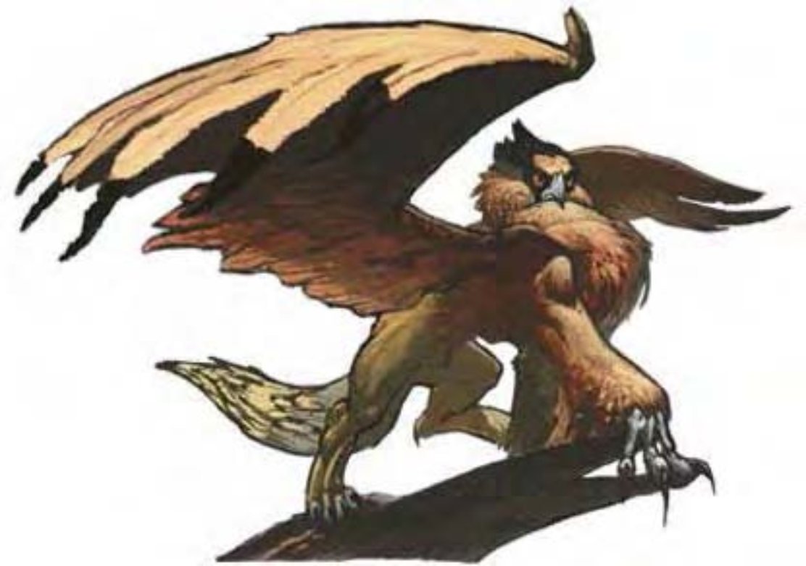

| 资料栏位 | 狮鹫 (Griffon) 大型魔法兽 |
| 生命骰 | 7d10+21 (59HP) |
| 先攻 | +2 |
| 速度 | 30英尺 (6格)、飞行80英尺 (普通) |
| 防御等级 | 17 (-1体型、+2敏捷、+6天生)、接触11、措手不及15 |
| 基本攻击/擒抱 | +7 / +15 |
| 攻击 | 啮咬+11近战 (2d6+4) |
| 全力攻击 | 啮咬+11近战 (2d6+4)、2爪抓+8近战 (1d4+2) |
| 占据/触及 | 10英尺 / 5英尺 |
| 特殊攻击 | 猛扑、耙抓1d6+2 |
| 特殊能力 | 黑暗视觉60英尺、昏暗视觉、灵敏嗅觉 |
| 豁免 | 强韧+8、反射+7、意志+5 |
| 属性 | 力量18、敏捷15、体质16、智力5、感知13、魅力8 |
| 技能 | 跳跃+8、聆听+6、侦察+10 |
| 专长 | 钢铁意志、多重攻击、专攻武器 (啮咬) |
| 环境 | 温带丘陵 |
| 组织 | 单独、成双或兽群 (6-10) |
| 挑战级数 | 4 |
| 宝藏 | 无 |
| 阵营 | 总是绝对中立 |
| 进化 | 8-10HD (大型)；11-21HD (超大型) |
| 等级修正值 | +3 (部属) |
这种生物有着结实、狮子般的身体，头部与前脚则像只巨鹰，还有一对巨大的金色翅膀。
狮鹫是一种强大威武的生物，同时具有狮子与老鹰的特征。狮鹫会猎食各式猎物，但最喜欢的是马肉。
成年狮鹫从喙部到尾巴长约8英尺。不论公母狮鹫都没有鬃毛，背上那对宽大的金色翅膀展开可达25英尺以上。狮鹫体重约500磅。
狮鹫在高处筑巢，俯冲攻击猎物时会发出老鹰般尖锐的叫声。虽然狮鹫是具有攻击性与领域性的生物，依旧有足够的智能去避开强大的敌人。狮鹫几乎总是先攻击马匹，那些试图从饥饿狮鹫爪下保护马的人，常常会成为餐点的一部分。
狮鹫无法说话，但能听懂通用语。
战斗狮鹫偏好以俯冲或跳跃的方式将猎物扑倒。
猛扑 (特异)：若狮鹫向对手俯冲或冲刺，仍可进行全力攻击（包括两次耙抓）。
耙抓 (特异)：攻击加值+8近战、伤害1d6+2。
技能：狮鹫在“跳跃”与“侦察”检定时具有+4种族加值。
虽然具有智慧，狮鹫仍需受训才能载人战斗。狮鹫对训练者的态度必须为友善（可通过“交涉”检定达成），才能进行训练。训练友善的狮鹫需时六周，并须通过“驯养动物”检定（DC=25）。骑狮鹫需使用特别鞍座。狮鹫可背负骑师进行攻击，但骑师若未通过“骑术”检定，则无法同时战斗。
狮鹫蛋在开放市场中约值3500金币，幼兽则值7000金币。养育或训练单只狮鹫的专业训练费用为1500金币。
负重能力：轻度负荷为300磅、中度负荷301-600磅、重度负荷601-900磅。